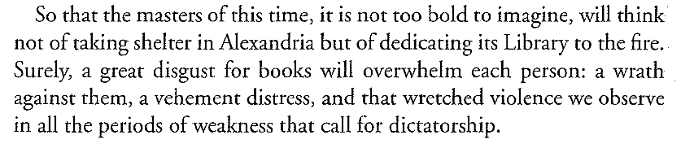

Like I guess there is no reason to believe anyone would find this 1959 literary theory essay compelling or relevant but consider:

Blanchot, Maurice. “Death of the Last Writer.” translated by Charlotte Mandell. in The Book to Come. 2003 [1959].